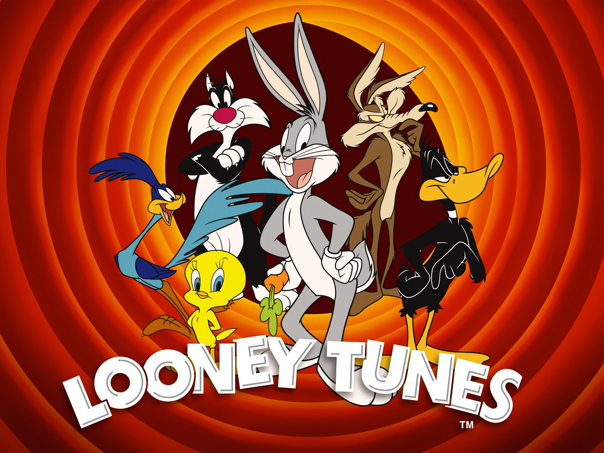

Contact
Looney Tunes is an American media franchise produced and distributed by Warner Bros. The franchise began as a series of animated short films that originally ran from 1930 to 1969, alongside its spin-off series Merrie Melodies, during the golden age of American animation